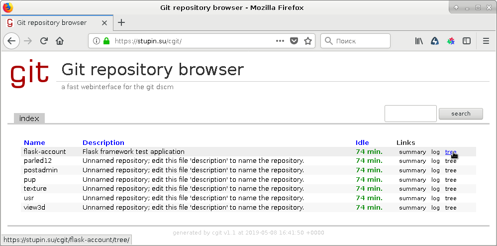

cgit - это веб-интерфейс для доступа к git-репозиториям, который написан на Си и в целом аналогичен приложению Gitweb, написанному на Perl. Поскольку оба приложения очень похожи друг на друга, не стану притворяться и скажу прямо: эта статья является почти дословным повтором статьи про Gitweb, с необходимой поправкой на специфику cgit. Как и в случае с Gitweb, для эксперимента решил попробовать настроить cgit поверх связки nginx и uWSGI.
Установим необходимые пакеты:
# apt-get install nginx-light uwsgi cgit
Первым делом настроим сервер приложений uWSGI для запуска CGI-сценария. Для этого создадим файл /etc/uwsgi/apps-available/cgit.ini со следующим содержимым:
[uwsgi] procname = uwsgi-cgit procname-master = uwsgi-cgit-master plugins = cgi processes = 1 threads = 4 cgi = /cgit/=/usr/lib/cgit/cgit.cgi cgi-timeout = 5
Теперь нужно подключить использование этого файла:
# cd /etc/uwsgi/apps-enabled/ # ln -s /etc/uwsgi/apps-available/cgit.ini .
Перезапустим uWSGI, чтобы его новые настройки вступили в силу:
# systemctl restart uwsgi.service
Теперь настроим файл конфигурации самого приложения cgit. Я буду настраивать приложение в подкаталоге веб-сервера /cgit/, поэтому у меня файл конфигурации /etc/cgitrc принял следующий вид:
favicon=/cgit/static/favicon.ico css=/cgit/static/cgit.css logo=/cgit/static/cgit.png snapshots=tar.gz tar.bz2 zip remove-suffix=1 enable-index-links=1 enable-index-owner=0 scan-path=/var/lib/cgit/
Будьте внимательны при редактировании файла конфигурации: порядок некоторых опций имеет значение. В частности, опция snapshots работает только при указании перед опцией scan-path.
Кроме указания пути к каталогу с проектами при помощи опции scan-path, имеется возможность описать каждый проект индивидуально и даже сгруппировать проекты. За подробностями обращайтесь к странице руководства cgitrc.
Наконец, теперь пришла очередь настраивать веб-сервер nginx. Для настройки откроем файл в каталоге /etc/nginx/sites-enabled/, найдём секцию сервера и впишем в неё следующие настройки:
location /cgit {
return 301 $scheme://$host$request_uri/;
}
location /cgit/static/ {
autoindex off;
alias /usr/share/cgit/;
}
location /cgit/ {
uwsgi_pass unix:/run/uwsgi/app/cgit/socket;
include uwsgi_params;
uwsgi_modifier1 9;
}
Перезагрузим nginx, чтобы добавленные нами настройки вступили в силу:
# systemctl reload nginx.service
Как можно увидеть в файле конфигурации /etc/cgitrc, созданном нами ранее, репозитории git должны размещаться в каталоге /var/lib/cgit/. Создадим этот каталог и назначим права на него:
# mkdir /var/lib/cgit # chown www-data:www-data /var/lib/cgit # chmod o= /var/lib/cgit
В этом каталоге нужно создать подкаталоги с расширением .git, содержащие так называемые «голые» (bare) репозитории. Обычный репозиторий, в котором ведётся разработка, содержит внутри себя текущие версии файлов, над которыми идёт работа, и каталог .git. Каталог .git, по-сути, и является «голым» репозиторием. Для создания «голого» репозитория из обычного можно воспользоваться такими командами:
# cd /var/lib/cgit # git clone --bare /home/stupin/git/view3d view3d.git
И не забудьте поменять права доступа на «голый» репозиторий:
# cd /var/lib/cgit # chown -R www-data:www-data view3d # chmod -R o= view3d.git
Теперь можно запустить браузер и проверить доступность приложения. У меня стартовая страница приложения выглядела следующим образом:
